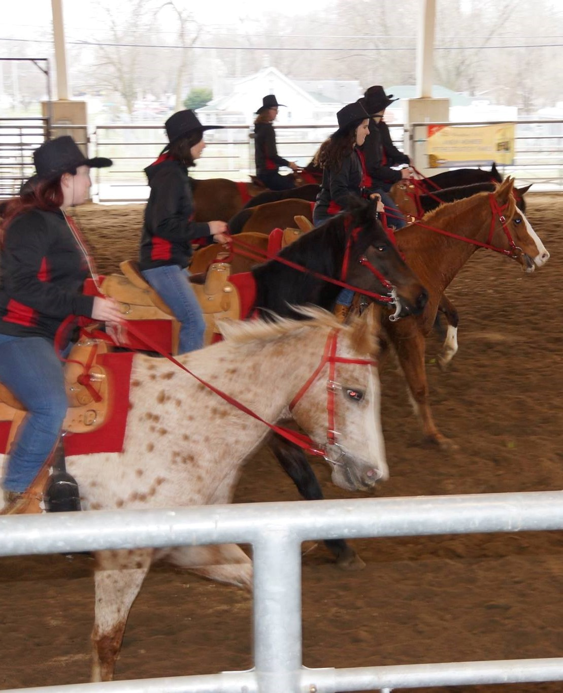
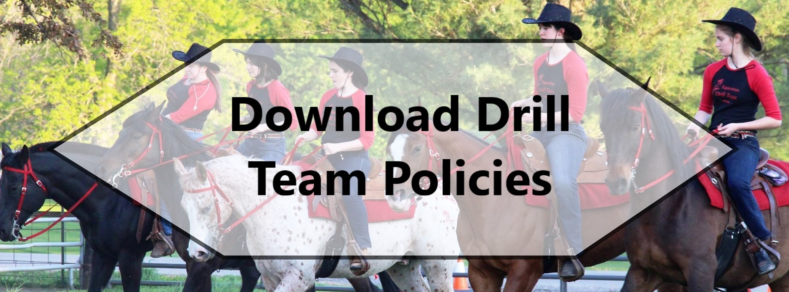
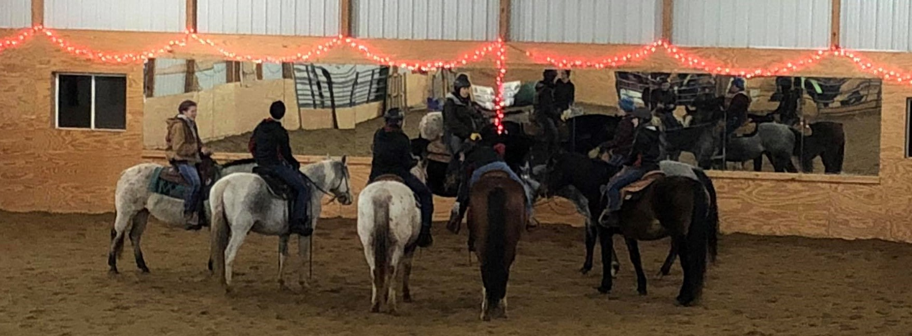

Are you an enthusiastic, hardworking, and skilled rider? Do you love Western riding and being part of a team? Then we want you! We're currently looking for new riders on our intermediate team, but before you contact us, there are some things you should know.
It's hard to explain, but it's essentially syncronized horseback riding. Our drills are somewhat like marching band routines at football games but without the music and on horseback. It makes more sense if you see a video; check out some of our previous performances on the "Events" page.
Yes. Please understand that this is not meant to be exclusionary; it's for the safety of all our horses and riders. Drill team is a fast-paced and intense environment. Even horses as well-trained as ours behave differently in practices than in lessons. We don't want to endanger beginner riders by asking them to handle arguing or unruly horses during practice. Lessons are a far better place to get started with horseback riding, and you'll be ready to join drill team before you know it! Some of our members hadn't ridden before they got to Grinnell, but after a semester or two of lessons, many people are prepared to join intermediate team.
It's hard to predict. That's why you'll need to try out. But you should be able to lope/canter independently, steer around sharp turns, and have good horsemanship skills. If you've only ridden English, this isn't a problem; many of our drill team members came from English backgrounds. Just be excited and ready to learn western!
This depends on how much funding we receive from the college. Using the horses and arena costs $20 per practice, most of which is covered by the college. Usually, drill team members don't have to pay anything for practices. Last semester, members were asked to pay $5 per practice because the club didn't get enough funding. It has not yet been determined by the college how much funding we will receive this semester, but the cost of drill team will be kept as low as possible because we want to make it accessible for everyone. If cost is a barrier to your joining drill team, let us know, and we will probably be able to make practices free for you. Lessons for drill team members cost the same as lessons for everyone else, but this is also negotiable if you're worried about paying for them.
Yes. Riding on either drill team means attending practice and lessons. This totals 2.5-3 hours on a horse per week. Then there's catching, tacking, warming up, cooling down, untacking, and turning out horses each ride.
Expect that to take around 2 hours per week. To recap, we've reached 4.5-5 hours, and that's not including the barn chores, extra meetings, and other commitments. Being a member of advanced team is, in general, more time consuming
than intermediate team, so the 4.5 hour estimate is more accurate for intermediate team.
Missing practice is highly frowned upon, since it's hard to ride in sync with someone who isn't there! Very few members have ever
missed a practice. However, if you are too sick to ride or are in a similarly unavoidable situation, allowances can be made. Schoolwork is not an acceptable reason to miss practice.
Attending the Iowa Horse Fair can require missing class, depending on what days the fair will be. But it's all worth it!
Here's a more detailed description of drill team policies:

Intermediate drill team has simpler drills, is slower paced, and is a smaller time commitment than advanced team. In other words...
The majority of intermediate team drills are trotting,
whereas most advanced team drills have a lot of loping. It is expected that advanced team riders have experience performing some of the simpler moves, such as pinwheels and suicide passes.
However, intermediate team doesn't expect any drill team experience of its members, and everything will be more thoroughly explained.
Riding on advanced team is more time consuming than riding
on intermediate team because advanced team practices are a half hour longer than intermediate team practices. Advanced team riders are often expected to ride at least 3 times a week (as opposed to
two times per week, which is the requirement for intermediate team members), and advanced team riders typically dedicate more time to non-riding activities, such as bake sales and tabling.
Riders on intermediate team aren't necessarily less experienced riders; in fact,
if you're new to drill team, expect to be placed on intermediate team, regardless of prior horse
experience.
This is because riding on a drill team is a specific skill. Being a great roper doesn't mean you're good at saddleseat; likewise, being great at other sports doesn't
mean that you're good at riding on a drill team. Even if you can lope your horse for miles at home, if you've never ridden on a drill team, you're probably not ready
to lope in a drill team setting.

Moving from one team to another is easy, and many riders spend only one year on intermediate team before moving to advanced. When there's room on both teams, some
members have also chosen to ride on both. After all, both teams have loads of fun, and riders can learn a lot from being on either!
Great, we'd love to have you! We accept new members for the first few weeks of every semester. To join, send us an email at equestrian@grinnell.edu. If it's currently the middle of the semester, there might still be room for you! Just send us an email and ask. If not, we're sorry, and we'll be happy to welcome you next semester.